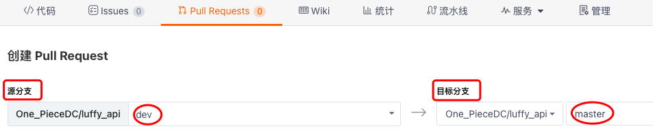

git生活版
git介绍¶
Git是分布式版本控制系统,控制的对象是开发的项目代码.
1> 对文件(代码)进行版本管理
2> 完成 协同开发 项目, 帮助程序员整合代码
i）帮助开发者合并开发的代码
ii）如果出现冲突代码的合并, 会提示后提交合并代码的开发者, 让其解决冲突
下载: https://git-scm.com/book/zh/v2/起步-安装-Git
Q: git与svn的区别.
git: 分布式管理 ; svn: 集中管理.
每个git客户端都有自己版本库,本地就可以进行版本管理,不需要远程.
svn必须把代码提交到远端, 才能进行代码版本管理..依附于服务端进行版本管理.
也就是说
Git:分布式,无网络时也可以提交到本地版本库,待到有网络时再push到服务器.
svn:非分布式.无网络不可以提交.
Q: git、gitlab、gitee、github有什么区别
基于docker搭建一个gitlab,参考文档: https://www.cnblogs.com/liuqingzheng/p/15325288.html
git: 版本管理软件
github: 全球最大的开源代码仓库
- 开源的代码,托管在github上,其他人可以下载
- 代码托管平台(开源的、不开源的都可以托管) 公有仓库免费,部分私有仓库收费 Ps:私有的一般不会托管在github上
- git的远程仓库
gitee: 码云. 国产版github.
- 国内访问会比github快很多
- 小公司,会花钱使用gitee的私有仓库.
gitlab: 公司内部自己的代码托管平台.简单来说,就是公司内部自己搭建了一个gitee.
简单来说:
git 软件
github 全球最大的开源代码托管平台
gitee 国内最大的开源代码托管平台
gitlab 公司内部的代码托管平台
Q: git工作流程

注: 图中标红的是需要记住的.
工作区 === 暂存区 === 版本库
工作区修改的内容(删除、新增、修改) --> 提交到暂存区 --> 提交到版本库
强调:
git checkout . ==> 恢复工作区的更改,慎用
git reset HEAD ==> 把暂存区的更改拉回到工作区,少用
git reset --soft 版本号
git reset --mix 版本号 ==> 这两条命令知道就行,基本不会用
git reset --hard 版本号 ==> 直接将工作区的内容变成相应版本库里的某个版本,偶尔会用
git基本命令¶
注意: 空 文件<夹> 不会被git管理
1.★ 创建出一个工作区,在里面操作文件
1) 将已有的文件夹初始化为git仓库
cd 目标文件夹
git init # -- 初始化仓库,表明该文件夹被git所管理啦!在目标文件夹下会生成一个隐藏的.git文件夹!!
2) 在指定目录下初始化git仓库
cd 目标目录
git init 仓库名 # -- 在目标目录下会自动创建一个和仓库名一样的文件夹,在该文件夹下会生成一个隐藏的.git文件夹!!
2.★ 查看状态
git status
# -- 红色 表示变化了,没有提交到暂存区
# -- 绿色 表示在暂存区,没有提交到版本库
# -- 若没有变化,表示所有代码都被版本管理啦
git status -s # -- 查看仓库状态的简约显示
3.★ 从工作区提交到暂存区
git add s1.py # -- 只提交s1.py到暂存区
git add . # -- 把工作区中的所有更改都提交到暂存区 红变绿
4.★ 从暂存区提交到版本库
git commit -m '注释'
5.★ 查看日志
git log # -- 查看版本变化的日志
git reflog # -- 以简略形式显示日志
git log 和git reflog的区别:
git log 命令可以显示所有提交过的版本信息如果感觉太繁琐,可以加上参数 --pretty=oneline,只会显示版本号和提交时的备注信息
git reflog 命令可以查看所有分支的所有操作记录(包括已经被删除的 commit 记录和 reset 的操作)
6.恢复到某个版本
git reset --hard 版本号
7.把工作区的内容恢复到版本库最后的状态
git checkout .
8.设置用户和邮箱
# -- 作用: 提交到版本库后,能看到是谁改的
# 注意: 一个仓库有局部用户,优先使用局部用户,没有配置再找全局用户
# ◎ 全局配置
# 注: 全局配置后 会在用户家路径的\.gitconfig中新建用户信息,在所有仓库下都可以使用
git config --global user.name "用户名"
git config --global user.email "用户邮箱"
# ◎ 局部配置
# 注: 局部配置后 会在当前仓库下的.git文件夹的config中新建用户信息,只能在当前仓库下使用
git config user.name "用户名"
git config user.email "用户邮箱"
过滤文件¶
Git工作目录中, 有些文件必须有, 但又不能提交它们, 就可以设置忽略文件!!
在Git工作区的根路径下新建立 .gitignore 文件. 在文件中写忽略文件..
文件或文件夹名: 代表所有目录下的同名文件或文件夹都被过滤
/文件或文件夹名: 代表仓库根目录下的文件或文件夹被过滤
eg:
a.txt - 项目中所有a.txt文件和文件夹都会被过滤
/a.txt - 项目中只有根目录下a.txt文件会被过滤
/b/a.txt - 项目中只有根目录下的b文件夹下的a.txt文件会被过滤
*x*: - 名字中有一个x的都会被过滤（*代表0~n个任意字符）
空文件夹不会被提交,空包会被提交,包可以被提交（包中有一个init空文件）
注: a/b a、b都是空文件夹,git status不会有变化!
分支操作¶

ps: 上图就是git的flow工作流. 我们用的是 master-dev-bug.
一般的中小型公司都是这样操作:
主分支只用来发新版本 v1 v2 v3
dev分支用来开发..(v1到v2开发过程中若干次提交) dev分支开发完后合并到主分支.再发布到服务器.
1.创建分支
git branch 分支名
注:master主干上所有的东西都被git管理后,拉取分支才是合理的!
2.查看分支
git branch
3.切换分支
git branch 分支名
4.删除分支
git branch -d 分支名
注: 在当前分支上删除当前分支是删除不了的!
5.合并分支
# -- 将 某分支 合并到当前所在分支上
git merge 某分支
# -- 注:将dev分支合并到master分支上时,可能会出现冲突!!
远程仓库¶
以gitee为例, 作为我们的远程仓库!!
远程仓库地址有两种 http/ssh.
登陆gitee,创建 <空> 仓库!
若创建的不是空仓库, 本地的有内容, push上去, 就会有冲突.. 如何解决?
先pull拉取下来, 将本地master分支中除了.git文件的其它文件,复制到刚从远程拉取的那个仓库中.. 再add commit push..
http协议连接¶
git config --global user.name "DC"
git config --global user.email "1415806497@qq.com"
git remote add origin https://gitee.com/One_PieceDC/test.git # -- 添加远程仓库,并将该远程仓库命名为origin
git remote # -- 查看本地设置的远程仓库
git push origin "master" # -- 将本地的master分支 提交到/推到 远程仓库
注 - 第一次推远程仓库时,会让输入用户名和密码..
若是在windows系统上操作的.会弹出一个框.
输入的用户名和密码会自动保存到 控制面板 -> 用户账户 -> 凭据管理器 -> windows凭据 -> 普通凭据 中.
保存后,下一次推就不会让输入啦.
git pull origin "master" # -- 从远程仓库拉取代码
git remote remove origin # -- 删除本地设置的远程仓库
ssh连接¶
推送和下载,使用http协议的形式,需要输入用户名和密码
现在使用ssh连接远程 -- 公司里基本上使用的这种!
使用ssh连接远程
- 不需要输入用户名和密码
- 需要配置公钥和私钥(非对称加密)
强调:私钥是自己的,一定不能丢;公钥可以给别人.
注:别人使用公钥加密数据传递过来,我们再用私钥解密. 哪怕中途数据被截获了,没有私钥也是解不开的.
step1: 生成/添加公钥私钥
官方文档: https://gitee.com/help/articles/4181#article-header0
# -t 使用什么加密方式 ; -C 邮箱地址
One_Piece@DC的MacBook test % ssh-keygen -t rsa -C "1415806497@qq.com"
Generating public/private rsa key pair.
# 这里提示了默认的保存路径/Users/One_Piece/.ssh
Enter file in which to save the key (/Users/One_Piece/.ssh/id_rsa):
... ... # -- 一路Enter回车即可
cd /Users/One_Piece/.ssh # -- 在该文件夹下,id_rsa是私钥 id_rsa.pub是公钥
step2: 将公钥添加到gitee中,相当于<当前>机器与gitee建立了一个加密通道(走的ssh的协议).
step3: 在本地添加ssh协议形式的远程仓库地址
git remote add origin_ssh git@gitee.com:One_PieceDC/test.git
# -- 它会自动去电脑里查找私钥,第一次提交时,会问你是否确定使用该私钥,输入yes即可!!往后直接提直接拉.
git push origin_ssh master
协同开发 clone¶
组长本地创建出空项目,底层代码写完 ---> 提交到远程仓库
张三、李四、王五都要共同开发这个项目, 我们需要先把代码 clone 到本地
提交前,时不时的pull下!!
以路飞学城的后端项目为例
1> git init
2> 设置忽略文件 .gitignore (设置后,被忽略的文件在pycharm里会变成黄色)
.idea
.DS_Store
/logs/*.log
__pycache__
3> git add .
4> git commit -m "第一次提交,写完了首页功能"
5> 在远程,建立一个远程<空>仓库
6> 在本地git里添加一个远程仓库地址
git remote add origin git@gitee.com:One_PieceDC/luffy_api.git
7> 把本地仓库的代码推送到远程仓库
# -- -u表示缓存了origin "master",下次只需要敲git push就相当于敲了git push origin "master"
# git push -u origin "master"
git push origin "master" # -- 因为已经配置了ssh,公钥私钥,所以该处的提交不需要任何认证
--- 强调,上述5个步骤,若是从头开始的新项目的话,才会如此操作.(一般来说,以上的操作,公司的前辈就已经做好啦!) ---
项目的拥有者将新来的人加成项目的协同开发者.
1> 新来的人 执行下面命令 克隆代码/跟下载zip文件没啥两样
git clone git@gitee.com:One_PieceDC/luffy_api.git
2> 基于克隆下的代码,开发新功能 eg:新增了一个s1.py文件
git add .
git commit -m "新增一个s1.py文件"
3> 推送到远程
# -- 我将本地的代码推送过去.失败.大概率是因为 <“多人在同一分支开发出现冲突”>
# 远程的master分支其它成员已经往后推了两个小版本,新增了很多内容
# 而我们本地的仓库是基于远程master分支最开始的状态开发的..所以推送失败.需要先pull同步下.
# 若远程最新的版本中有s1.py 在拉取远程代码同步过程中还会有冲突,需要解决冲突!
# -- So,在推送之前,先拉取一下代码,将最新的代码同步到本地,可能会有冲突,时不时拉取下,可以减少冲突的概率.
git pull origin "master"
git push origin "master" # -- 用户名密码;对仓库有写权限(一开始新人可能只是观察者,不是开发者,所以不能提交代码)
本地bug分支¶
主功能已上线,现在服务器运行版本是v1.1
在dev分支上开发着新功能
忽然发现上线的主功能上有bug -- 需要新建一个bug分支(基于master分支建立bug分支)
- 改bug
- 把变更提交到bug分支 -> 测试 -> 合并到master -> v1.1.1
注:若还发现有bug,基于v1.1.1继续改bug
新功能开发完了 -- 要合并到master分支 -- v1.2
- 这里的dev分支和master分支合并,可能会有冲突(eg:改到了同一个文件),也可能没有.

解决bug,开发新功能,不出冲突的情况
git branch dev # -- 在本地新建了一个dev分支
git checkout dev # -- 在本地切换到了dev分支
# 注:此时远程是没有dev分支的.
# 方式1) 可以远程建立分支,同步到本地
# 方式2) 可以本地建立分支,同步到远程
git push origin dev # -- 将本地的dev分支推到远程
--- 新建一个s1.py,在里面开发新功能 ---
vim s1.py # 第一行写了"用户功能"
git add .
git commit -m "dev开发了用户功能"
git push origin dev # -- 将本地的dev更改提交到了远程的dev分支
--- 继续开发新功能 ---
vim s1.py # 第二行写了"订单功能"
git add .
git commit -m "dev开发了订单功能"
git push origin dev # -- 将本地的dev更改提交到了远程的dev分支
-- 此时,测试发现了线上系统有bug,需要紧急修复bug --
# -- 1> 首先要基于master建立一个bug分支,在bug分支上修改bug
# 注意:master分支和bug分支是没有s1.py文件的!!
git checkout master # -- 切换到master分支 ps:在dev分支执行了commit操作后就可以切换到master分支上啦
git branch bug # -- 在本地基于master分支新建了一个bug分支
git checkout bug # -- 切换到本地的bug分支
# 远程是没有bug分支的,可以把该分支提到远程,也可以不用.
# 可以在本地操作完了,合到master,再提交到远程,也是ok的!
vim s2.py # -- 新建一个s2.py文件,第一行写了"解决了bug"
git add .
git commit -m "bug分支解决了bug"
# -- 2> bug修复后,合并到master上,需要先切换到master分支
git checkout master # -- 此时该master分支上是没有s2.py的
git merge bug # -- 不会出冲突,合并后,该master分支上就有s2.py啦
# -- 3> 将合并了bug分支的master分支推到远程
git push origin master # -- 最新v1.1.1版本发布
-- 切换到dev分支继续开发 --
git checkout dev
-- 开发完后,合并到master--
git checkout master
git merge dev
git push origin master # -- 最新v1.2版本发布
解决bug,开发新功能,出冲突的情况
准备工作,先把bug和dev分支删除,本地只有master分支.
--- 在dev分支上开发新功能 ---
git branch dev
git checkout dev
vim common.py # -- 写入代码 print(1234)
git add .
git commit -m 'dev分支增加了common.py'
--- 线上环境出问题 ---
git checkout master
git branch bug
git checkout bug
vim common.py # -- <此时,在bug分支上是没有common.py的> 新建common.py 写入代码 print(9999)
git add .
git commit -m 'bug分支增加了common.py'
--- 把bug的更改合并到master分支上 ---
git checkout master
git merge bug # -- 本地bug合并到本地master上,放心,这里不会有冲突 <master分支就有了common.py>
--- 把dev合并到master分支上 ---
git merge dev # -- 此时,就会出冲突!!因为都改了common.py文件
"""
(luffy) One_Piece@DC的MacBook luffy_api % git merge dev
冲突（add/add）: 合并冲突于 common.py
自动合并 common.py
自动合并失败, 修正冲突然后提交修正的结果.
"""
""" # -- 此时,common.py是这样的!!
<<<<<<< HEAD
print(9999)
=======
print(1234)
>>>>>>> dev
"""
git add .
git commit -m '解决冲突'
git push pull "master" # -- 正常情况需要先拉取下,保证提交到远程时没有冲突
git push origin "master"
冲突解决¶
冲突出现的情况:
多人在同一分支开发出现冲突
分支合并出现冲突
情况一¶
别人跟你改了同样的代码,但是他先提交到远程仓库了.你要提交, 提交不上,先拉取,拉取下来,因为改了同样代码,冲突..
多人在同一分支开发出现冲突 -- push不成功,先pull
远程master: ■(最开始) -- ■(李四提交的) -- ■(王五提交的 王五新建了s1.py并写了内容)
本地: 基于远程master最开始的节点clone的代码,开发了新功能,新建s1.py,并在里面写了很多内容.
git add .
git commit -m "开发s1.py"
准备push提交到远程master,提交被拒绝了.
解决方案,先pull拉取远程最新的代码到本地,会有冲突提示,s1.py的冲突
<<<<<<< HEAD
我写的
=======
王五写的
>>>>>>> f9436c568cf24f6c4239abffc2d035318e0b9666
若冲突是同一个功能,跟同事商量,保留某一个人的.
若冲突不是同一个功能,保留两个人的代码.
git add .
git commit -m "解决冲突"
git pull origin master
git push origin master
情况二¶
分支合并出现冲突 -- merge合并分支,有冲突,解决冲突后,再次add commit,最后pull push提交
线上分支合并¶
前面的分支合并都是在本地完成,然后推到远程.. 当然,远端也可以合并分支!! 术语 - 提交pr
# -- master分支和dev分支 (本地和远端都有)
# -- 本地dev合并到本地master上 ==> 可能会出现冲突 - 情况二
# -- 合并完后,本地master提交远程master ==> 可能会出现冲突 - 情况一
--- 在线上完成dev合并到master,即提交一个pull request,简称 提交pr. ---
# 实验准备:保持实验环境干净,本地和远端都只有master分支!
1> 本地创建dev,提交到远程
git branch dev
git checkout dev
git push origin dev
2> 在common.py中加入了代码,提交到远端的dev分支
3> 原来是在本地将本地的dev合并到本地master,本地master提交到远程master.
现在是在线上将远程的dev合并到远程的master中.
我们只需在线上提交一个pull request.
领导收到后,测试、review审查代码,通过后,合并(合并分支-merge ; 扁平化分支-变基),此时,dev分支才合并到了master分支!!

远程仓库回滚¶
# -- 本地恢复到最初状态
git checkout master
git reset --hard 版本号
# -- 提交到远程(强制提交)
git push origin master -f # -- 一般不要用!
pycharm操作¶
其余操作截图,参考
https://www.cnblogs.com/cainiaozhy/p/16875573.html#4-pycharm操作git
我还是更喜欢用命令来操作...
git操作日志

本地文件与版本库进行比较,每次提交前,先看看!!

面试题¶
1.什么是变基?git rebase
- 扁平化合并 让日志更简洁
- 1> 可以将多个记录整合成一个
- 2> 解决分支合并分叉问题(公司里不咋用,面试又爱问 单走一个字6)
2.git pull和git fetch的区别
- 相同点首先在作用上他们的功能是大致相同的,都是起到了更新代码的作用
- 不同点git pull 类似于 git fetch+git merge
3.何为git工作流(gitflow)?
- 分支方案,很麻烦
- 知道,但一般我们使用 master-dev-bug 这样的分支方案.
Git大回顾¶
没事多pull代码, 一个功能push一次代码.
1.git: 版本管理软件,进行版本管理.协同开发.合并代码.
- 分布式: 即便没有远端,在本地上也能进行版本管理.
2.gitee、github、gitlab 都是 git的远程仓库.
3.git安装
- win、mac:官方下载软件,一路下一步;
- linux: yum install git
4.工作流程
- 工作区、暂存区、版本库、远程仓库
5.常用命令
- git init
- git status
- git log: 只显示当前和以前的版本
- git relog: 回退、删除的版本都会显示
- git add .
- git commit -m '注释'
- git pull origin master 将远端的master分支拉取下来
- git push origin master 将本地的master分支推到远端
- git clone 地址
6.忽略文件 .gitignore
7.分支管理
- 中小型公司主流的分支方案
主分支+dev分支+bug分支 ☑️
Ps:还有的会自己只在本地建立一个分支来开发,eg:dc分支,开发完后,将dc分支合并到dev分支,再将dev分支推到远端(可做pr)
- git branch
- git branch dev 若远端想创建dev分支,可以本地创建后推送到远端;或者在远端点击创建
- git checkout dev
- git branch -d dev 强制删除的话是-D 谨慎使用
- git merge dev 一定要理清是谁合并到谁上面去
8.远程仓库
要时不时同步下远端仓库和本地库,举个例子:
远端库 v0
张三 v0 v1 v2
李四 v0 v3 v4
李四先提交,远端库就变成了v0 v3 v4
张三想提交,提交不上去,得先同步,张三本地库就变成了 v0 v3 v4 v1 v2 再提交上去,远端库就变成了v0 v3 v4 v1 v2
若张三想提交,提交不上去的时候,强制提交,那么远端库就变成了 v0 v1 v2
李四直接就吐了!李四将远端库恢复到v0 v3 v4的状态.张三全责.
- gitlab、github、gitee
- git remote add 远程仓库(https/ssh)
- https: 用户名和密码
- ssh: 公钥和私钥 --> 非对称加密,加密用公钥,解密用私钥 --> 其它应用场景:Linux主机之间操作、支付宝支付时
9.协同开发
- 大家接入同一个远程仓库项目
- 把你加成开发者,给你一个远程仓库地址
- git clone 远程地址
- 基于它开发,推到远程
10.线上bug,分支解决方案
11.冲突解决
- 多人在同一分支开发
- 分支合并出现冲突
12.线上分支合并 (pr)
13.远程仓库回滚 - 基本用不到
14.pycharm操作git
- 之前所有的命令,都可以点击完成
15.面试题
为开源软件贡献代码 fork -- 改好bug后向开源项目pull request
也可以issues,在开源项目中提出这个bug.